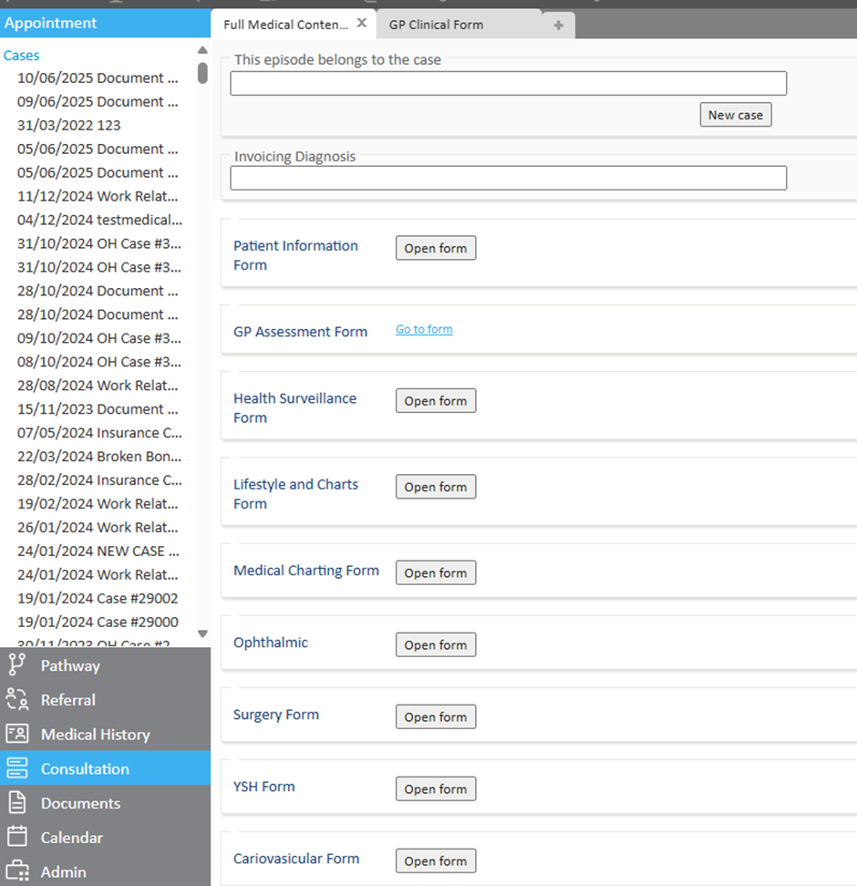
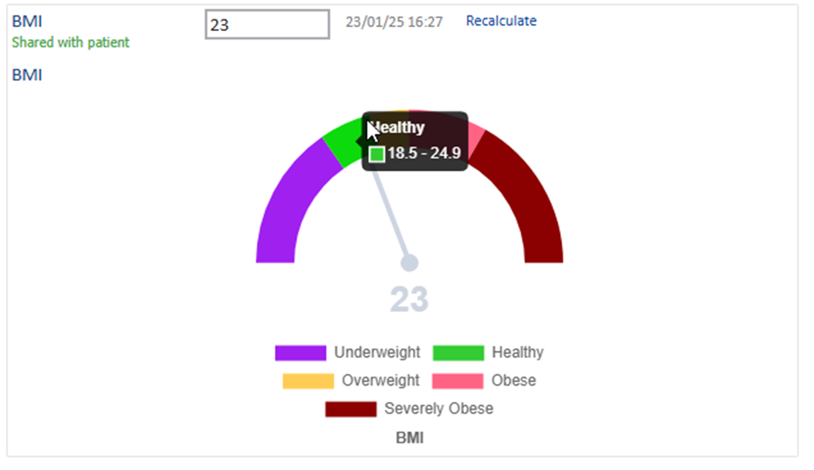
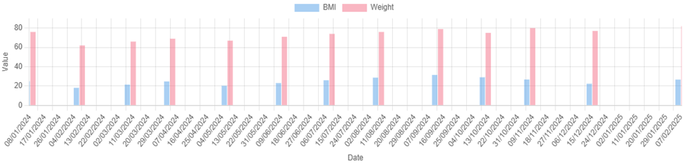
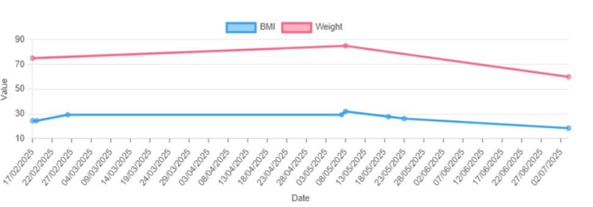
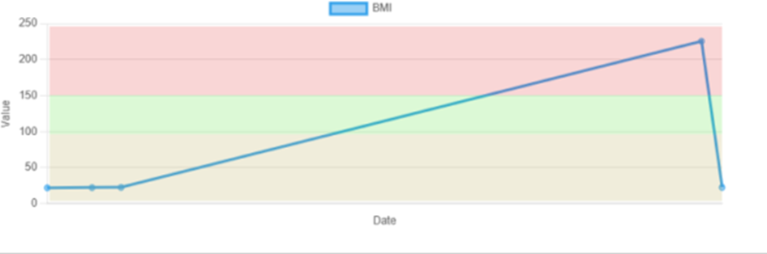
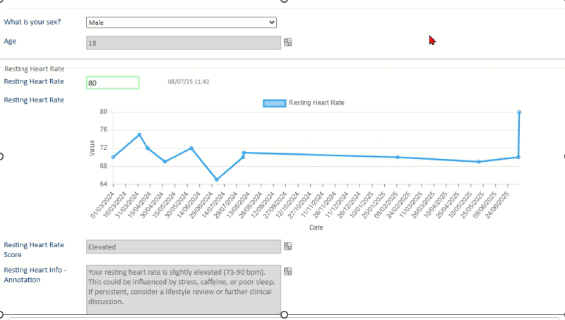
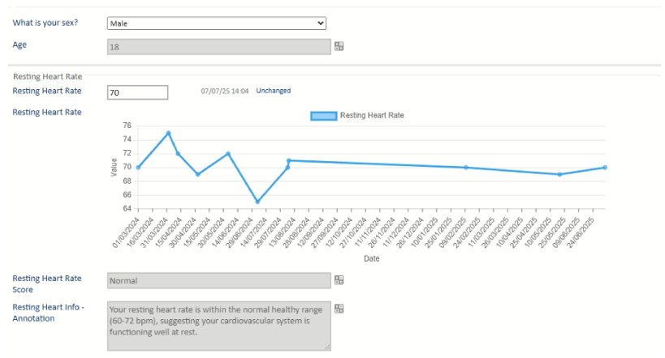

These features are available today to make clinical forms easier to use, more responsive to patient data, and clearer when sharing key information. With smarter clinical forms and visual charting, Meddbase is making it easier for clinicians to capture the right details quickly and clearly. By adapting to the data being entered and presenting it in a more intuitive way, these tools help reduce admin time, improve accuracy, and support better collaboration across teams.
This article covers the following topics:
Move quickly between forms or sections
Buttons allow clinicians to open other forms or jump to specific sections with a single click, ideal for longer or multi-step assessments.
Helpful for:

Only show what's relevant—as you go
Forms can now adapt in real-time. Questions appear (or stay hidden) based on earlier answers. For example, ticking a box, typing a symptom, or selecting from a dropdown.
Why it helps:
Make clinical data easier to see and explain
Charts can now be added directly into forms and documents. They help clinicians and patients understand values, trends, or risks at a glance, and you can interact with them to focus on the data that matters most.
Gauge: Shows a risk score on a dial
e.g. blood pressure or BMI risk score

Stack: Shows a result within a range
e.g. screening result in a reference range

Bar: Can display data over time
e.g. dosage levels, weight, BMI

Line: Shows changes over time
e.g. weight or blood sugar history


Why it helps:
To use a chart in a document, just add the following template code to your template: {Charts.CHARTNAME}
Turn patient data into automatic insights
Meddbase can now calculate values (like BMI), interpret them using logic (like risk scores), and display tailored advice based on the result, all within the form.
Calculations
Use entered data (e.g. height + weight) to auto-calculate values.
Functions
Functions can range from simple logic (e.g. age + BP = risk level) to complex formulas that pull from multiple parts of the medical record.
Example: If…
→ return: "Low Risk"
If same BP and ethnicity, but age is over 50 → "High Risk"
Some organisations choose to use licensed or nationally recognised clinical algorithms such as QRISK, if a customer provides the licensed algorithm we can then format and configure it to work within your workflow.
Binding
Displays information associated with the function result directly in the form, such as:
Examples
Entering a resting heartbeat of 80 for an 18-year-old male automatically triggers a score of ‘Elevated’ - this is the Function working. The associated binding then shows relevant follow-up guidance in the form.
Entering a heartbeat of 70 for the same person automatically indicates normal range
These outputs are tools to support clinical decisions, not replace them.


Why it helps:
Charting and Smart Forms are available to all customers on a Core, Plus or Pro Meddbase plan.
To get started:
If you're not yet on Core, Plus or Pro, the support team can discuss options.